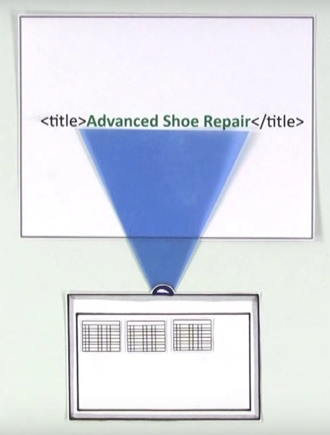

Search Engine Optimization
Prev NextWhat Are Search Engines Looking For?
Content
Particularly words. When a user creates a search, the engine looks at each word in each webpage in order to match it with the user’s keywords. This includes appropriately marked alt tags for images and well designed UX.
Titles
An effective title will help get more effective search results, as a search engine puts a lot of weight into titles. Titles usually summarize the content of the page.
Links
Links to your page are like recommendations to a search engine. The more links you have from trustworthy sites, the more weight your page will have in a search.
Search engines take words used in links into account. For example, if a link leading to Audible.com contains the word “audio book,” then the search engine will associate Audible with audio books.
Reputation
Sites with quality content and links will often do better in search rankings. Improving the quality of your content and providing better UX will help boost your website in search results.